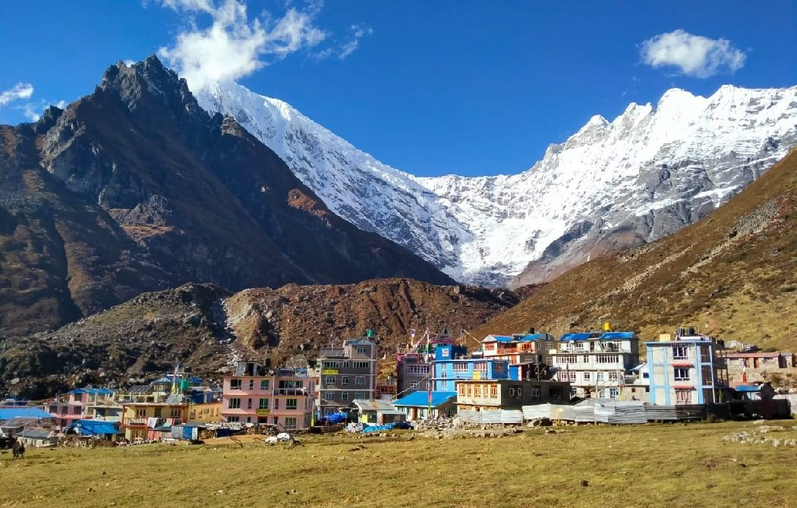
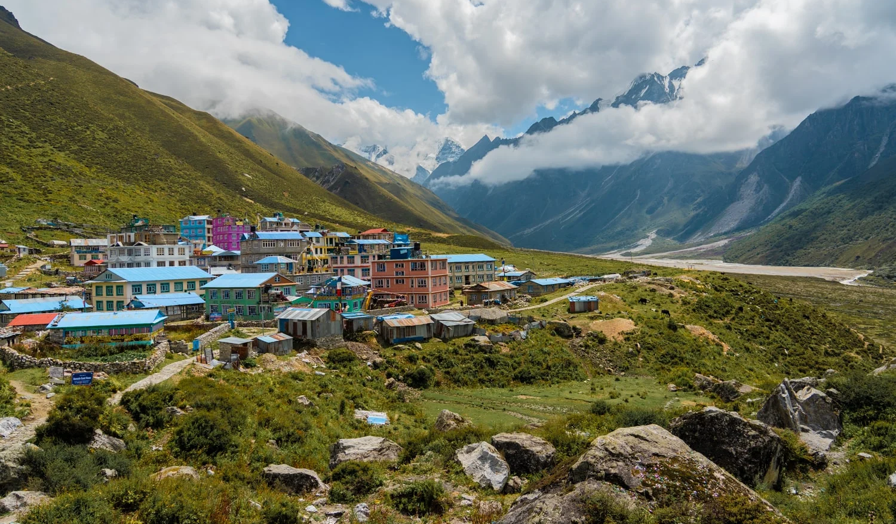
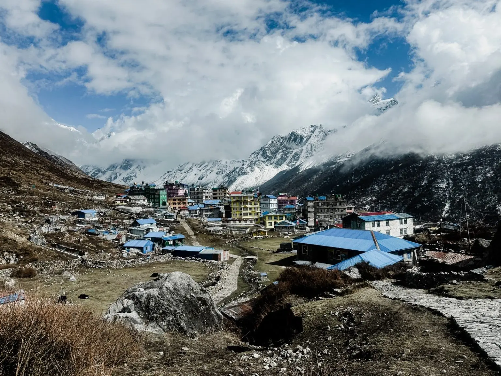
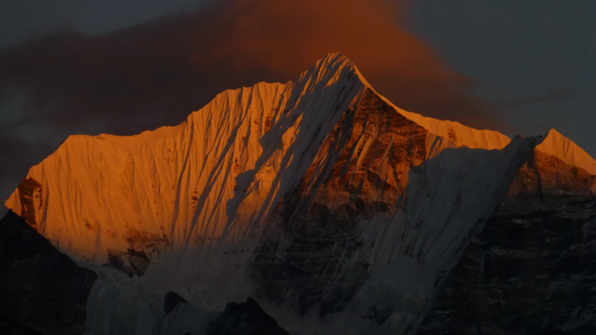
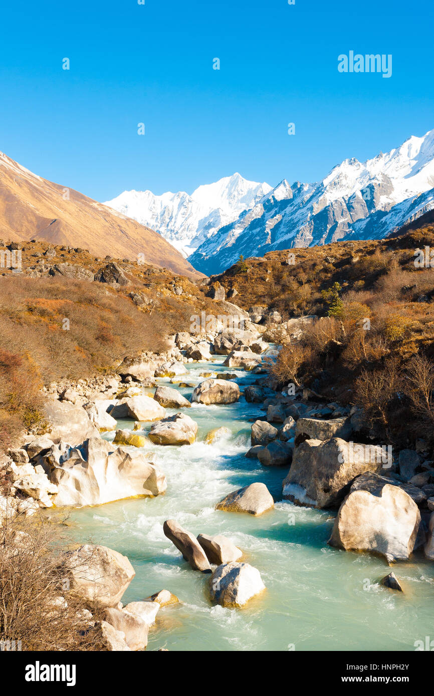
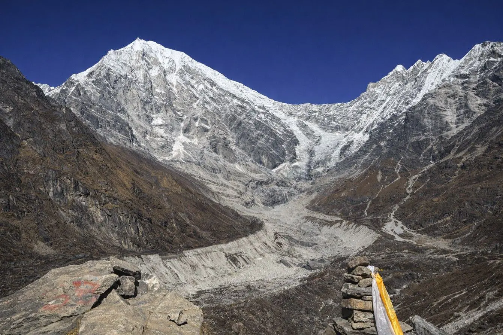
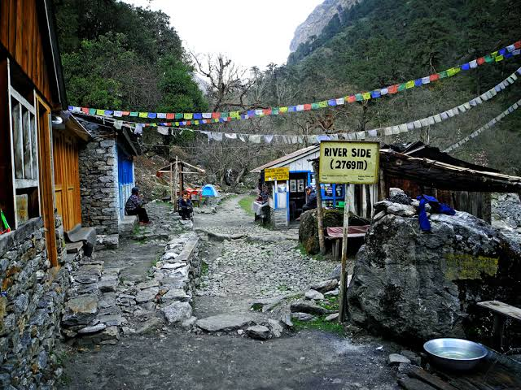
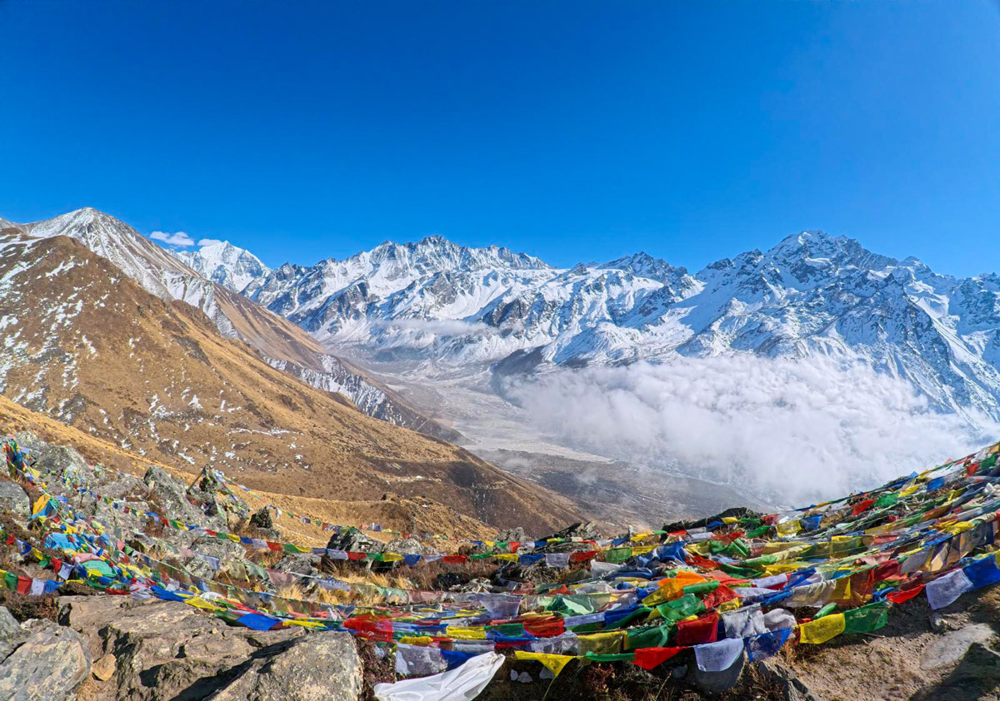
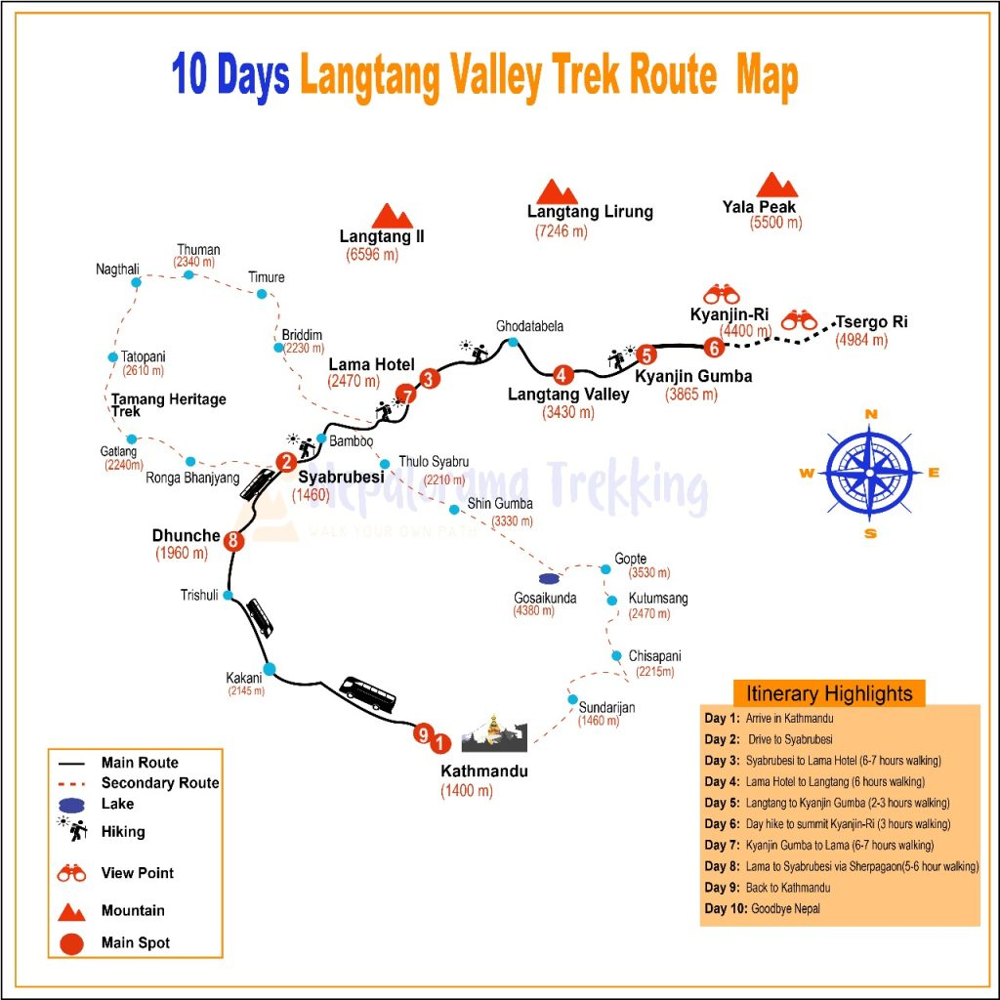
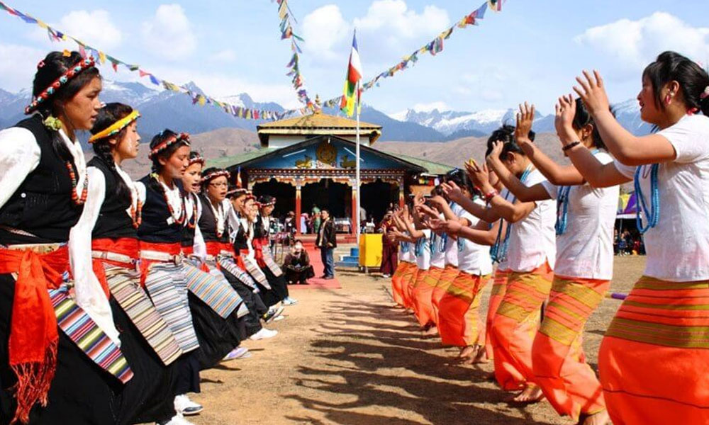

Experience the breathtaking beauty of the Langtang Valley, a hidden gem in the Himalayas.
The Langtang Valley Trek is a journey through the heart of the Langtang region, offering stunning views of snow-capped peaks, lush forests, and traditional Tamang villages. This trek is perfect for those seeking a less crowded alternative to the more popular trekking routes in Nepal.
| Starting Point | Syabrubesi |
| Ending Point | Syabrubesi |
| Highest Altitude | Kyanjin Gompa (3,870 m) |
| Total Distance | 65 km (approx.) |
Experience the most iconic landmarks of the Langtang region, from traditional Tamang villages to stunning rhododendron forests and dramatic mountain vistas. The trail passes serene rivers, quaint teahouses, and high-altitude meadows filled with prayer flags.
Along the way, expect to meet warm local hosts, learn how communities live at altitude, and witness spectacular sunrises over the Langtang peaks. The trek is both peaceful and rewarding, with unique cultural and natural highlights.
The trek features daily hikes of 5-7 hours, simple teahouse accommodations, and changing weather at higher altitudes. Meals will often include dal bhat, soups, noodles, and hot drinks to keep you energized.
A glimpse of the breathtaking landscapes and cultural experiences you will encounter on the Langtang Valley trek.









